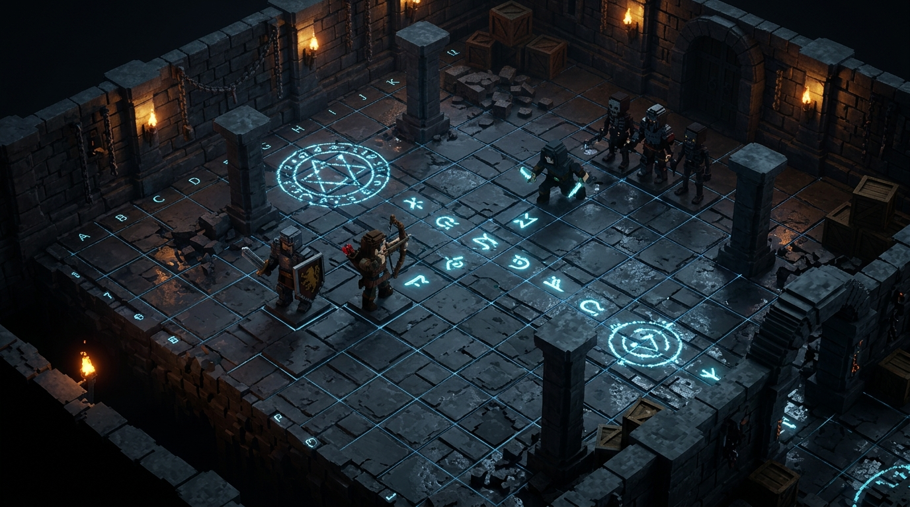

Dominez l'Arène Éthérée en Voxel Ciselé
Plongez au cœur d'un univers où l'acier froid, les dalles de pierre et l'éther incandescent s'affrontent en temps réel continu. Formez vos escouades de 12 mercenaires sur grille préparatoire 3x4, programmez leurs Gambits d'action sans délai et menez des raids parallèles dans des donjons procéduraux.

* Illustration conceptuelle représentative de l'objectif visuel et de la direction artistique (non issu d'une capture de gameplay direct).
Arbre Tactique des Classes
Naviguez librement dans l'arborescence des classes canoniques. Chaque mercenaire peut atteindre le Niveau 100 dans chaque classe et conserve ses compétences débloquées, utilisables en raid sous condition d'équiper l'arme requise.
Fiche d'Identité & Grimoire
Examinez en détail les spécificités mécaniques, les coûts d'éther et les synergies d'altérations pour chaque classe.
Sentinelle
Évolution directe du Guerrier, la Sentinelle sacrifie une part de sa vélocité offensive au profit d'un pavois massif capable d'absorber les coups les plus violents et d'infliger un déséquilibre mortel aux assaillants.
Compétences de Combat & Tactiques
4 Capacités RévéléesAttaque de Base
Frappe défensive à l'arme à une main tout en maintenant la garde levée pour minimiser l'exposition.
Blocage Partiel
Posture active réduisant considérablement un pourcentage des dégâts subis de face contre une perte d'endurance/stamina.
Buff de Défense
Renforce l'armure et les résistances magiques de la Sentinelle et des alliés proches durant 12 secondes.
Bash au Bouclier
Coup violent asséné avec le pavois, repoussant violemment la cible en arrière et lui infligeant l'état Déséquilibre.